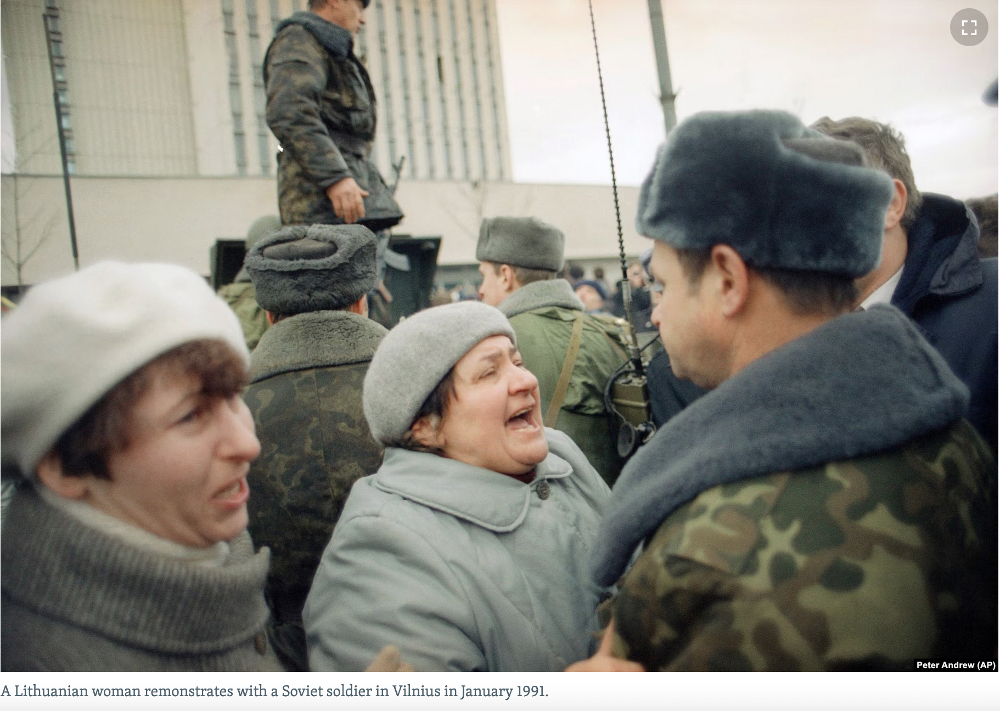

After the Declaration of Restoration of Independence in March, 1990, Soviet authorities in Moscow demanded Lithiuanian government to submit to their authority. Lithuanians ignored those demands and in January 1991 the Soviets sent troops to occupy key buildings in Vilnius killing fourteen protesters in the process. The most dramatic events occured at the Vilnius TV tower. Lithuanians went to the streets of their cities and the Soviets had to retreat.
